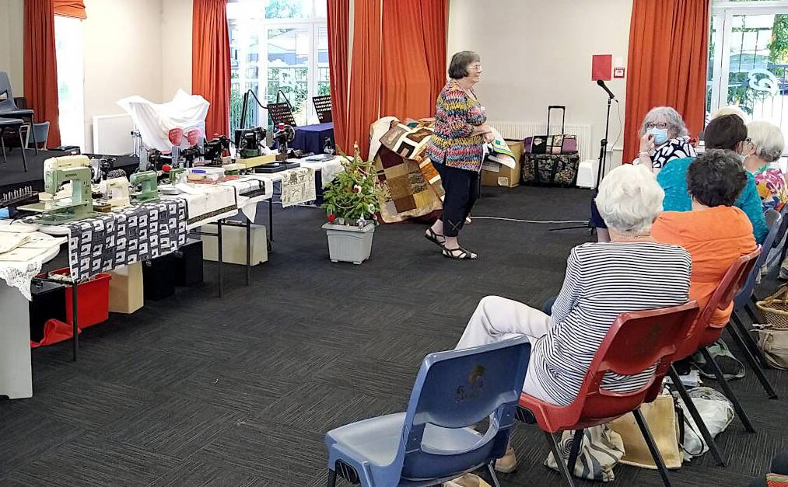
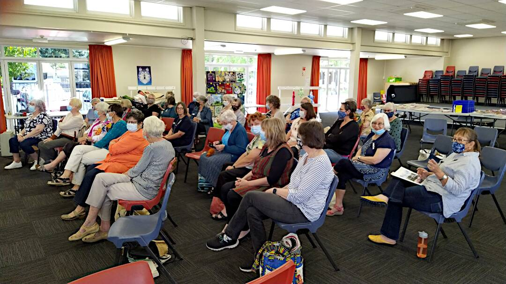

November 2021 Meeting
After three months of no meetings due to Covid restrictions, the Nelson Quilters Guild celebrated the end of 2021 at their meeting on Saturday 21 November at the Woodstock Centre, Stoke School.
There was a great attendance. Morning tea and lunch were provided. Apart from the numerous community and Show and Tell quilts there were two highlights:
- Carolyn Henry and Val McNaughton displayed and talked about their passion with old sewing machines and their parts. They were SO knowledgeable.
- The Challenge that was supposed to have been in our October show was hung and voted on. The imagination of the entrants was astounding, they were all so different.
The Viewers' Choice results were:
- 1st, Marion Whyte
- 2nd, Steph Hazlitt-Black
- 3rd, Steph Murch
The rest of the afternoon was spent chatting and sewing. It was a great celebration after a very disrupted year.

At the front, behind Leone, is a display of old sewing machines.

About 40 members attended the meeting.
Below are thumbnail images of quilts made for the "challenge" part of the quilt show. Click on a thumbnail image of a quilt to see a bigger version. Once you have finished viewing it click the browser's back button/arrow to return to this page.
{{item.description}}